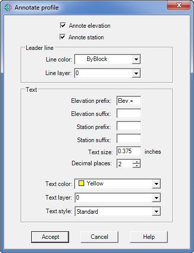

|
|
Toolbar:
Menu: CAD-Earth > Mesh commands > Annotate profile.
|
|
|
Command line: CE_ANNOTPROF
Prompts:
Select profile to annotate: Insertion point (ENTER to exit):
CAD-Earth version: Plus, Premium. |
.png)
.png)
Command description:
After a profile drawing is generated from a mesh, you can place additional elevation-station annotations in the profile by specifying text insertion points. Elevation and station values will be calculated according to the scale and rotation of the selected profile block.
Dialog box settings:

Annotate profile dialog box
ØAnnotate elevation. An elevation annotation will be placed to the left of the leader line for profile annotations.
ØAnnotate station. An elevation annotation will be placed to the right of the leader line for profile annotations. If the elevation will not be annotated, the station annotation will be placed to the left of the leader line.
ØLeader line.
•Line color. The selected color will be used to draw leader lines for profile annotations.
•Line layer. Leader lines for profile annotations will be created in the selected layer.
ØText.
•Elevation prefix. This is text that will be added before each profile elevation annotation.
•Elevation suffix. This is text that will be appended to the end each profile elevation annotation.
•Station prefix. This is text that will be added before each profile station annotation.
•Station suffix. This is text that will be appended to the end each profile station annotation.
•Text size. Height for profile annotations.
•Decimal places. Height for profile annotation text.
•Text color. The selected color will be used for profile annotations.
•Text layer. Profile annotations will be created in the layer selected.
•Text style. The selected text style will be used for profile annotations.
Tips:
•You must select an existing profile drawing created with the corresponding CAD-Earth command before an annotation is placed.
•You can specify a fractional text size for annotations (1/8, 3/8, etc.) and the value will be automatically converted to a decimal value.
Related topics:
•Import terrain mesh from Google Earth
Copyright © 2023 Arqcom Software
Google Earth© is a registered trademark of Google inc. All other trademarks are the property of their respective owners.